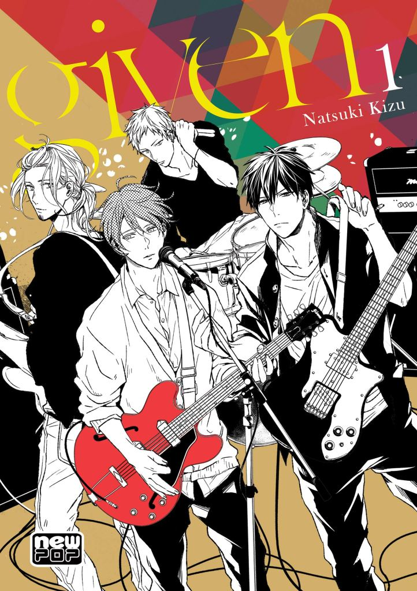
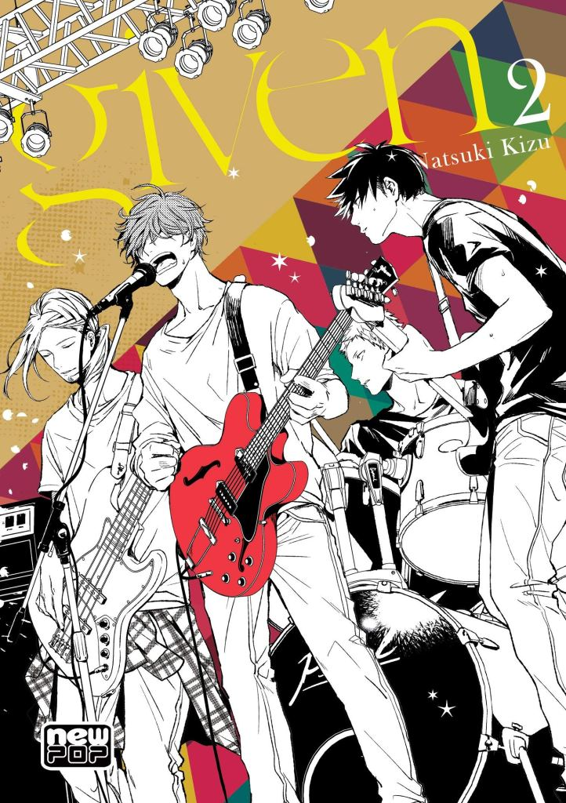
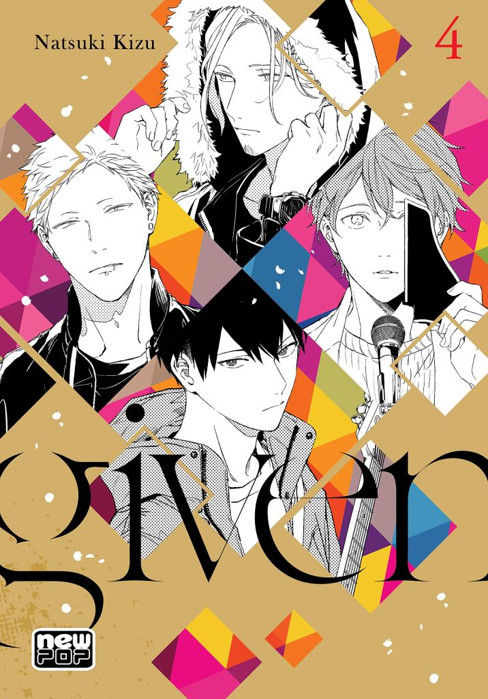
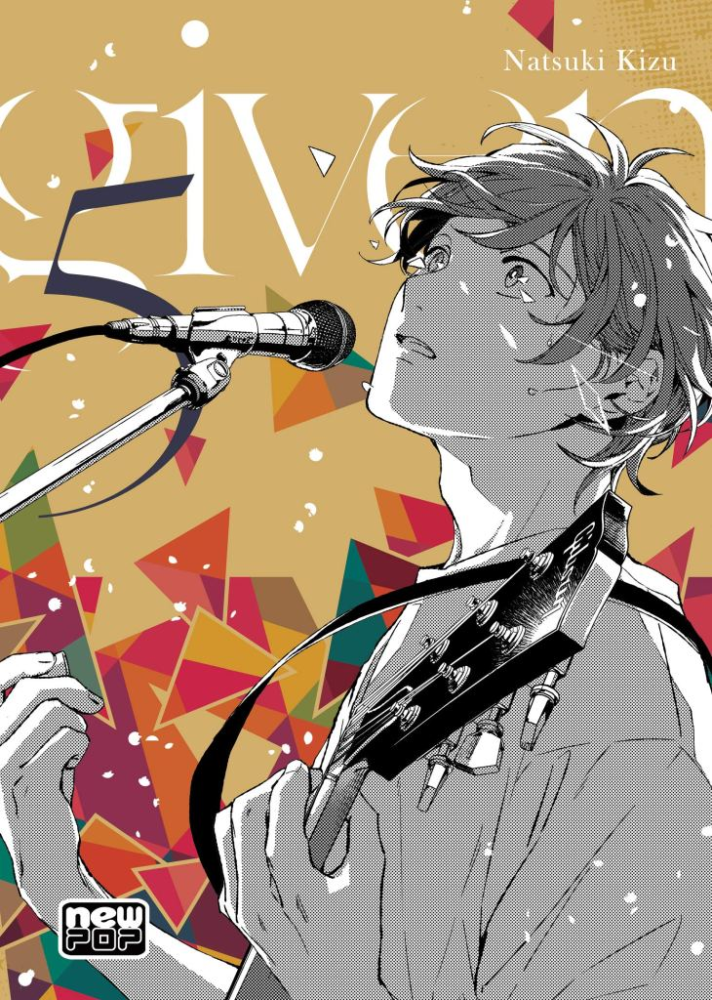
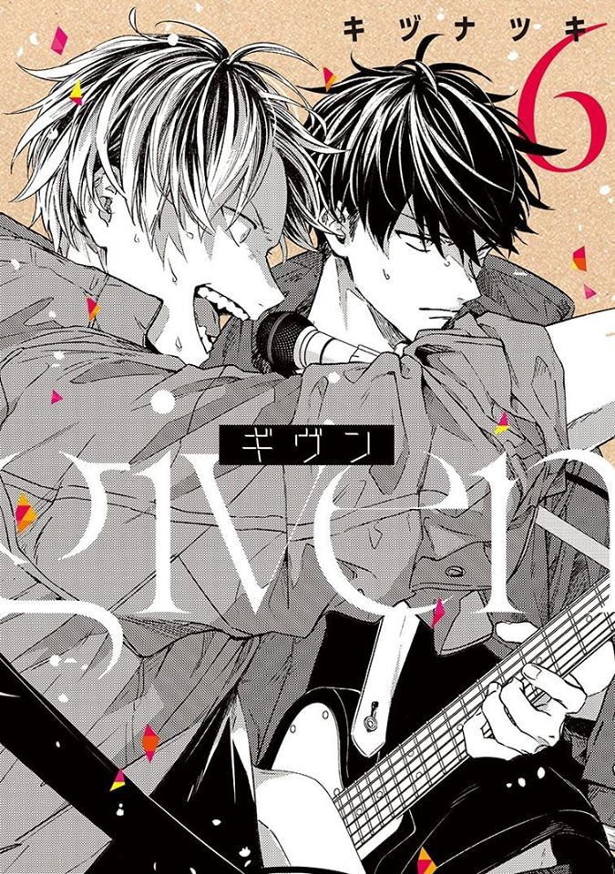
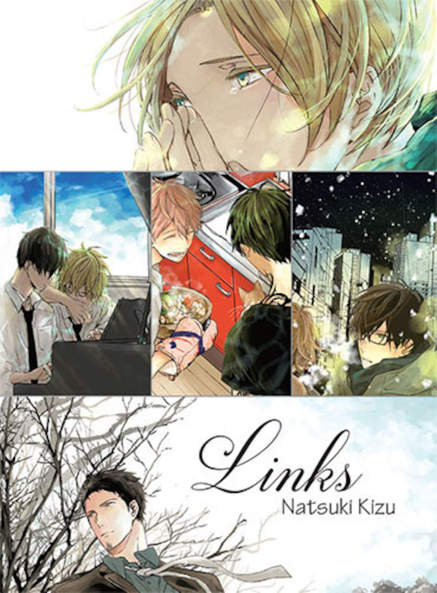

Volume 01
Ritsuka Uenoyama é um guitarrista colegial com talentos de sobra, que por acaso conheceu Mafuyu Sato
quando este o pede para trocar as cordas. Na mesma ocasião, Mafuyu pede para que Ritsuka o ensine a
tocar guitarra, porém, o guitarrista não gostou muito da ideia. No entanto, ele se vê obrigado a mudar
de opinião assim que ouve o canto estonteante de Mafuyu, a ponto de convidá-lo a fazer parte de sua banda.

Volume 02
A banda começa a jornada para realizar o seu primeiro show. No entanto, Mafuyu, que aceitou compor a letra
de uma das músicas, não estava conseguindo colocar em palavras o que gostaria de transmitir. Uenoyama, descobrindo
sobre o passado de seu companheiro, também fica confuso com os próprios sentimentos. Acompanhe o show de estreia cheio
de energia e que trará revelações do passado!
Volume 03
Dando-se conta da paixão que nutria por Mafuyu, Uenoyama acaba beijando-o nos bastidores do primeiro show da banda e agora
estava se remoendo por dentro por ter feito o que fez. Ele sequer tinha se declarado, nem muito menos sabia como o próprio
Mafuyu se sentia. E falando em amor, Haruki também nutre secretamente um sentimento pelo Akihiko... Como ficará esse novo
capítulo da banda recém-formada?

Volume 04
Com foco em participar do festival, a banda se dedica na produção das músicas novas e Haruki se surpreende com o talento
dos jovens Mafuyu e Uenoyama. Sentindo-se pressionado, o mais velho da banda acaba evitando os companheiros e aceita ajudar
a banda da ex-namorada. Porém, Akihiko, por quem Haruki secretamente está apaixonado, percebe isso tudo e a paixão entre eles
começa a soar cada vez mais forte.

Volume 05
“Eu sabia que não ia prestar se eu ficasse do seu lado. Mesmo assim, eu gostava. Gostava muito. ...Você foi o meu primeiro amor.”
O segundo dia de classificatórias valendo a participação no festival começou. Mafuyu ouviu os sentimentos de Ugetsu, percebeu que o
amor de Haruki não deu certo e, vendo o Akihiko no meio dos dois, começa a compor a sua música. A nova canção do Mafuyu irá desembaraçar
a complexa paixão de Akihiko, Haruki e Ugetsu.

Volume 06
(Ainda não lançado)
Às vezes, uma música pode salvar sua vida.
O amor pela música une os quatro membros da banda Dado: o violento guitarrista Uenoyama, o baterista playboy Akihiko, o gentil baixista Haruki
e Mafuyu, um cantor dotado de grande talento e sobrecarregado por tragédias do passado. Suas lutas e conflitos podem separá-los, mas seu vínculo
com a música - e um com o outro - sempre os aproxima de novo.
Sinopse: Sekiya, um locutor de rádio, e Shibata, que trabalha na cafeteria que ele costuma frequentar; Kameda e Ogikawa, que se encontram em uma noite fria e são acompanhados por um gato; Akiha, que não foi capaz de esquecer seu primeiro amor, e Yahiko, seu amante; e Nakajô e Sado, que estão juntos há muito tempo, mas estão sempre brigando. Esses quatro casais terão de lidar com seus sentimentos mais profundos se quiserem que seus relacionamentos não acabem.
